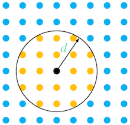
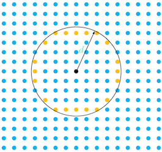

Table of contents
Species may move independently in a model domain using any number of available dispersal methods. They are added to a
species using the Species (Populations) add_dispersal() method, which is specified using one of the available methods listed in
popdyn.dispersal.METHODS.
These methods, and their keys are used to add each to a species are listed below:
density_flux(population, total_population, ...) |
‘density-based dispersion’ |
distance_propagation(population, ...) |
‘distance propagation’ |
masked_density_flux(population, ...) |
‘masked density-based dispersion’ |
density_network(args) |
‘density network dispersal’ |
fixed_network(args) |
‘fixed network movement’ |
Note
Poplulation is never moved outside of the model domain or to where carrying capacity is 0
A description of Minimum Viable Population is included herein as well, although it is a mortality driver. This method relies on spatial distributions and is considered appropriate for this section.
Dispersal methods are described as follows:
dispersal.density_flux(population, total_population, carrying_capacity, distance, csx, csy, **kwargs)¶‘density-based dispersion’
Dispersal is calculated using the following sequence of methods:
Portions of populations at each element (node, or grid cell) in the study area array (raster) are moved to surrounding elements (a neighbourhood) within a radius that is defined by the input distance (\(d\)), as presented in the conceptual figure below.

The mean density (\(\rho\)) of all elements in the neighbourhood is calculated as:
where,
\(pop_T\) is the total population (of the entire species) at each element (\(i\)); and
\(k_T\) is the total carrying capacity for the species
The density gradient at each element (\(\Delta\)) with respect to the mean is calculated as:
If the centroid element is above the mean \([\Delta(i_0) > 0]\), it is able to release a portion of its population to elements in the neighbourhood. The eligible population to be received by surrounding elements is equal to the sum of populations at elements with negative density gradients, the \(candidates\):
The minimum of either the population above the mean at the centroid element - \(source=\Delta(i_0)*k_T(i_0)\), or the \(candidates\) are used to determine the total population that is dispersed from the centroid element to the other elements in the neighbourhood:
The population at the centroid element becomes:
where,
\(pop_a\) is the age (stage) group population, which is a sub-population of the total.
The populations of the candidate elements in the neighbourhood become (a net gain due to negative gradients):
| Parameters: |
|
|---|
Attention
Ensure the cell sizes are in the same units as the specified direction
| Keyword Arguments: | |
|---|---|
|
|
| Returns: | Redistributed population |
dispersal.distance_propagation(population, total_population, carrying_capacity, distance, csx, csy, **kwargs)¶‘distance propagation’
Distance propagation is used to redistribute populations to distal locations based on density gradients. Portions of populations at each element (node, or grid cell) in the study area array (raster) are moved to a target element at a radius that is defined by the input distance (\(d\)), as presented in the conceptual figure below.
The density (\(\rho\)) of all distal elements (\(i\)) is calculated as:
where,
\(pop_T\) is the total population (of the entire species) at each element (\(i\)); and
\(k_T\) is the total carrying capacity for the species
The distal element with the minimum density is chosen as a candidate for population dispersal from the centroid element. If the density of distal elements is homogeneous, one element is picked at random. The density gradient \(\Delta\) is then calculated using the centroid element \(i_0\) and the chosen distal element \(i_1\):
If the centroid element is above the mean \([\Delta(i_0) > 0]\), and the distal element is below the mean \([\Delta(i_1) < 0]\), dispersal may take place. The total population dispersed is calculated by taking the minimum of the population constrained by the gradient:
The population at the centroid element becomes:
where,
\(pop_a\) is the age (stage) group population, which is a sub-population of the total.
The population at the distal element becomes (a net gain due to a negative gradient):
| Parameters: |
|
|---|
Attention
Ensure the cell sizes are in the same units as the specified direction
| Returns: | Redistributed population |
|---|
dispersal.masked_density_flux(population, total_population, carrying_capacity, distance, csx, csy, **kwargs)¶‘masked density-based dispersion’
See density_flux(). The dispersal logic is identical to that of density_flux, however a mask is specified
as a keyword argument to scale the dispersal. The \(mask\) elements \(i\) are first normalized to ensure
values are not less than 0 and do not exceed 1:
When the \(candidates\) are calculated (as outlined in density_flux()) they are first scaled by the mask value:
and are scaled by the mask when transferring populations from the centroid element:
| Parameters: |
|
|---|
Attention
Ensure the cell sizes are in the same units as the specified direction
| Keyword Arguments: | |
|---|---|
|
|
| Returns: | Redistributed population |
dispersal.density_network(args)¶‘density network dispersal’
Note
In Development
Compute dispersal based on a density gradient along a least cost path network analysis using a cost surface.
| Raises: | NotImplementedError |
|---|---|
| Parameters: | args – |
dispersal.fixed_network(args)¶‘fixed network movement’
Note
In Development
Compute dispersal based on a least cost path network analysis using a cost surface.
| Raises: | NotImplementedError |
|---|---|
| Parameters: | args – |